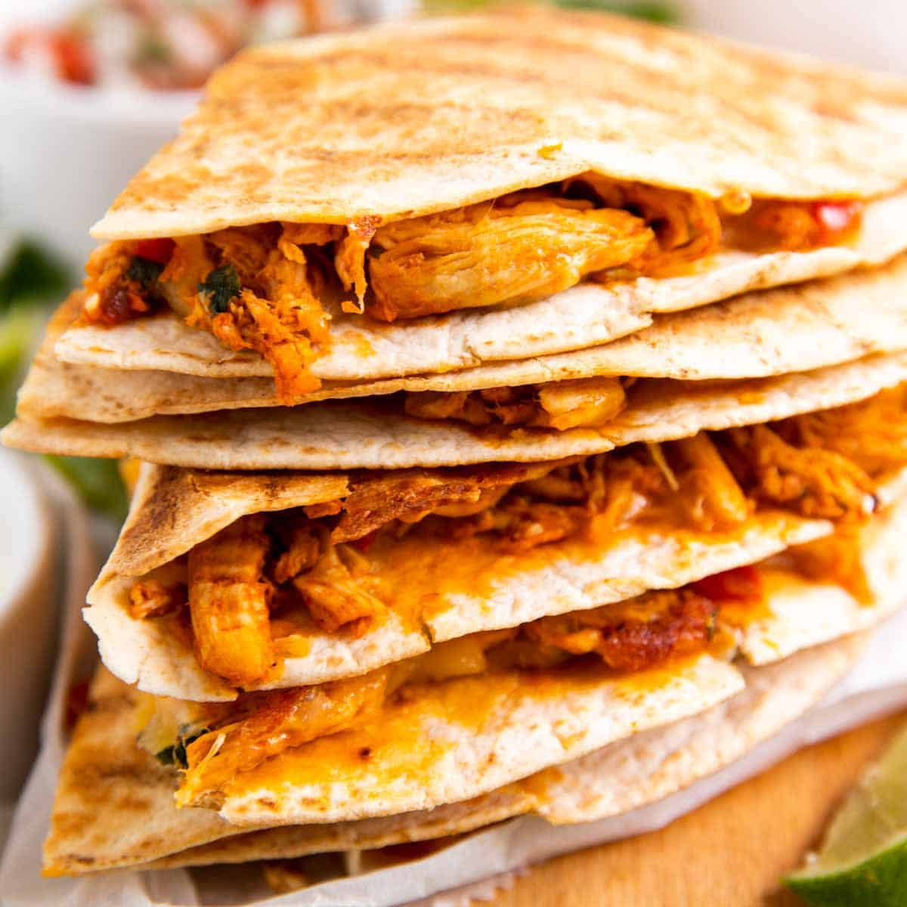

Quesadillas

Easy Chicken Quesadillas
This is such a quick and easy lunch or dinner recipe - it's ready in just 30 minutes and full of flavor.
All you need to do is cook the filling (don't worry, it won't take long), assemble the quesadillas and then brown them on the griddle or in a skillet.
Use homemade shredded chicken, buy a rotisserie chicken to shred or pre-shredded chicken... Or use leftovers from a whole roasted chicken! This recipe can be as from-scratch or as convenient as you need it to be.
Ingredients
- Chicken: It's easy to make shredded chicken at home - but rotisserie chicken or pre-shredded chicken also work here.
- Cheese: I use a Mexican blend, but Monterey Jack is also great. You can use shredded cheddar or a cheddar blend in a pinch, if that's all you have on hand.
- Tortilla wraps: I love using large, grilled flour tortillas from Mission for my quesadillas (not sponsored in any way, genuinely the brand I prefer). Fell free to use any brand you like, but I do recommend sticking to the same size and to flour tortillas for these.
- Red onion: White onion is a good substitute if you don't have red on hand, or simply leave it out if you are not a fan of onion.
- Taco seasoning: I always use my homemade taco seasoning, but feel free to use your favorite store-bought.
Steps
- Sauté the red onion in olive oil over medium heat until fully softened, about 3-4 minutes. Then stir in the green onion and peppers and cook for another minute.
- Add the chicken and taco seasoning along with 4-6 tablespoons of water. Stir well and cook for 2-3 minutes, until the water has evaporated.
- Assemble the quesadillas: Scatter about 2 tablespoons of cheese over one half of a large tortilla wrap. Top with ¼ of the chicken filling, then sprinkle with more cheese and fold over.
- Brush the outside with oil and cook on a griddle or in a large, non-stick skillet over medium-high heat until browned on the outside and melty on the inside.
- Cut the quesadillas in half and serve immediately.